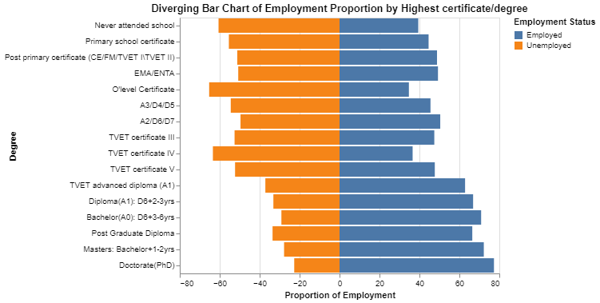
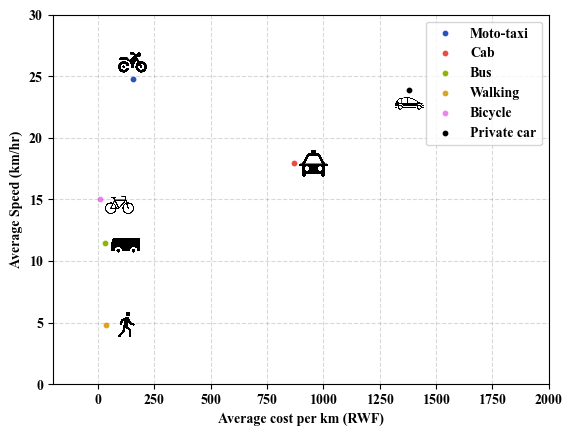

About
I am a passionate Data Scientist driven by curiosity and a commitment to uncovering data-driven solutions. I specialize in applying data analytics, machine learning, and geospatial analysis to real-life projects that bring meaningful change to society. Recently, I have focused on transportation and education domains, leveraging data to create actionable insights for societal improvement.
I recently completed my coursework for a Master of Science in Electrical and Computer Engineering with a concentration in Applied Machine Learning at Carnegie Mellon University Africa. Additionally, I hold a professional certificate in Google Advanced Data Analytics.
I am eager to connect with professionals in data science and analytics to collaborate on innovative solutions that drive impactful outcomes.
Outstanding Projects
-
I. Accessibility and Quality in Rwanda's Education System

Analysis of education census data revealed 298 sectors in Rwanda lack early childhood education facilities, and 4 sectors have no primary schools. Overcrowding and limited accessibility to education remain critical challenges, emphasizing the need for targeted interventions.
In January 2024, UNICEF reported that a significant number of Rwandan children complete primary education without solid foundational skills. Specifically, 33% of Primary 3 class students are unable to read and understand a grade-level text in Kinyarwanda, and nearly 90% are unable to do so in English, the official language of instruction. This issue is rooted in early childhood education challenges.
Analyzing census data and information on Rwandan schools, I assessed the student-to-school ratio across the country's 416 sectors. The findings revealed that 298 sectors lack any early childhood education facilities, and 4 sectors have no primary schools, indicating that approximately 71% of sectors are without early childhood education infrastructure.
Overcrowding is a significant concern in primary schools, with 36% of sectors having an average of 1,500 students per school. Given that 40% of Rwanda's population is under 15 years old, overcrowding and limited accessibility to primary and pre-primary education remain pressing issues. Addressing these challenges is crucial for the country's future, as quality education is a key contributor to employment and overall development.
-
II. Understanding Unemployment in Rwanda: Key Drivers & Insights
Key findings highlighted the impact of education, digital connectivity, and demographics on employment. Investment in education and bridging the digital divide are vital for addressing unemployment disparities in Rwanda.
As of the third quarter of 2024, Rwanda's employment participation rate stood at 64.1%, with a median age of 19 years and 78% of the population under 35 NISR. Employment remains a pressing challenge, shaped by education, digital connectivity, and demographic factors. Insights from the 2022 Census highlight education as a key determinant of employment, with over 60% of individuals holding tertiary qualifications being employed. However, disparities in access to quality education hinder opportunities for many, making investment in education and skills training essential to bridging the employment gap.
Digital connectivity significantly influences employability. Individuals with smartphones or feature phones equipped with radios report employment rates above 50%, while those without such access face higher unemployment. Furthermore, reliable internet access enhances job opportunities by providing pathways to resources, training, and professional networks. Bridging the digital divide through expanded connectivity and literacy programs is critical for increasing employment, particularly in underserved regions.
Geographical and demographic disparities also play a significant role. Urban centers like Kigali offer better employment prospects than rural areas such as the Western Province, underscoring the need for targeted rural development. Employment peaks among individuals aged 25-44, while younger and older populations face barriers tied to education and health challenges. Gender inequalities persist, with women experiencing higher unemployment rates. Addressing these disparities through inclusive policies and equitable resource allocation is vital for fostering Rwanda’s economic growth and resilience.
-
III. Cost and Time Efficiency of Transportation Modes in Kigali
This study evaluated urban transportation modes in Kigali, focusing on cost and time efficiency. Findings informed strategies to optimize urban mobility in African cities.
This part of ongoing research (Towards Digital Twins for Urban Mobility in Emerging Economies) explores the cost-effectiveness and time efficiency of various transportation modes in urban African contexts, with a spotlight on moto taxis' prominence in Kigali. In cities where informal transport systems dominate, moto taxis emerge as one of the most time-efficient and cost-effective options, particularly when evaluating overall cost per kilometer and average waiting times. The findings highlight moto taxis' practicality in addressing urban mobility challenges, offering a swift and affordable solution for residents..
The study also emphasizes the need for strategic investments in regulatory frameworks and digital innovations. Based on survey feedback from over 200 respondents across Kigali, key areas for improvement include the development of hailing apps, better hygiene practices, and enhanced safety measures. Implementing such advancements would not only address the concerns of commuters but also transform moto taxis into a safer, more reliable, and professionally managed transport mode.
By integrating proper regulations and leveraging technology, moto taxis can evolve into a cornerstone of sustainable urban transport. This approach will enhance rider and driver welfare, improve service quality, and contribute to a secure and efficient transport network in Kigali and similar African cities.
-
IV. Automating Palm Tree Counting with Computer Vision for Efficiency

This project aimed to automate palm tree counting in large areas to replace inefficient manual methods. By leveraging high-resolution drone images and advanced computer vision techniques, the project successfully automated the counting process, reducing the time from 12 minutes to under one second per image on average.
This project focused on improving how palm trees are counted in large areas of land. The client, who does seasonal work counting palm trees, previously relied on people manually counting trees from drone images, which was prone to human error and time consuming, Using high-resolution aerial images of the land, this computer vision solution utilized advanced computer vision techniques to automate the counting process.
With the help of Roboflow, this model was trained to infer tree counts from images in under one second. This represented a significant improvement compared to the manual process, which took approximately 12 minutes per image. This approach not only enhanced accuracy but also significantly reduced the time and effort required for palm tree counting.
By replacing labor-intensive manual counting with an automated solution, this project demonstrates how technology can streamline workflows, improve precision, and offer scalable solutions for agricultural and land management industries.